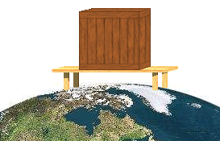

The applet on Page 2 shows forces acting on the parts of a system consisting of a box on a table which is standing on the earth and the free-body diagrams for the box, the table, and the earth. The system is pictured below. Of course, the three parts of the system are not illustrated to scale.

Detailed information on how the applet functions is available under Applet Help on the applet's Help menu.
See "Activities" under Related Items for suggestions on investigations on forces and free-body diagrams to be carried out with the applet.
The applet also shows the Newton's-third-law reaction forces to the forces acting in the system, but these are dealt with elsewhere, namely, at Force/Newton's Third Law/Simulate It/Box on Table.